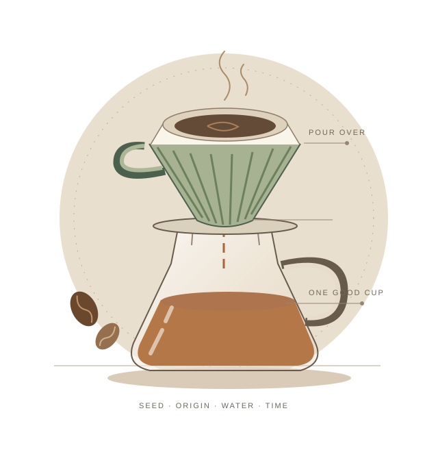

A FIELD GUIDE TO YOUR EVERYDAY COFFEE
좋은 한 잔은,
이해에서 시작된다.
씨앗이 자란 곳에서 오늘의 드리퍼까지.
원두를 읽고, 물과 시간을 다루며,
나에게 맞는 한 잔을 찾아가는 커피 안내서.

01원두를 읽다산지 · 품종 · 가공 · 로스팅
02한 잔을 설계하다추출 · 물 · 도구
03직접 내려보다기본 레시피 · 4:6 · 아이스
04다음 잔을 다듬다맛의 조정 · 보관과 관리
01 원두를 읽다
01씨앗이 자란 자리
산지와 농장을 읽는 법
품종 이름의 뒷이야기
티피카에서 게샤, 새로운 교배종까지
수확 뒤에 만들어지는 차이
워시드·내추럴·허니와 발효
볶음과 시간 읽기
로스팅, 디개싱, 봉투의 정보
02 한 잔을 설계하다
05진하기와 추출은 다르다
맛을 조절하는 변수들의 관계
물이라는 두 번째 재료
TDS·경도·알칼리도를 구분하기
도구와 분쇄의 기본
필요한 것부터, 같은 조건으로
03 직접 내려보다
08첫 잔, 15g으로 시작하기
매일 반복할 수 있는 기준 레시피
두 레시피로 배우는 주입
호프만의 V60와 카스야의 4:6
얼음도 레시피의 물이다
뜨겁게 추출하고 빠르게 식히기
04 다음 잔을 다듬다
11다음 잔에서 하나만 바꾸기
맛의 신호를 조정으로 연결하기
향을 지키는 작은 습관
원두 보관과 도구 관리
+ 찾아보기
A커피 용어 사전
봉투와 레시피에서 만나는 말
YOUR FIRST POUR OVER
오늘은 15g으로
시작해 볼까요.
정답을 찾기보다 돌아올 기준을 만듭니다.
한 잔을 내리고, 다음 잔에서 하나만 바꿔 보세요.
15 g원두
250 g투입수
94 °C시작 온도
0:00 가루 전체 적시기누적 30g
0:40 첫 번째 주입누적 150g
1:15 두 번째 주입누적 250g
한 잔용 연습의 출발점입니다. 분쇄와 종료 시간은 맛을 보며 조정합니다.
AT YOUR COFFEE TABLE